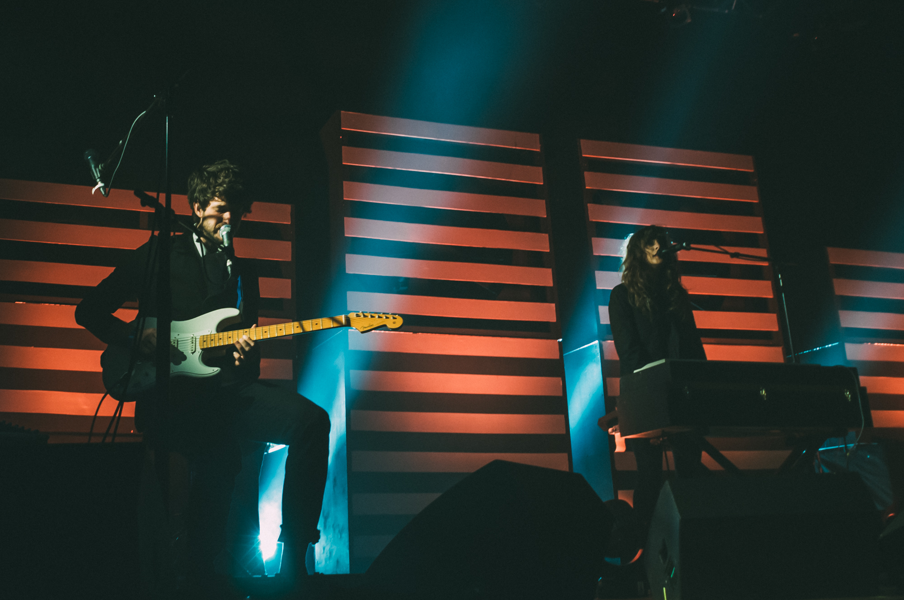

Dream Pop

Dream pop is a genre of music which aims to blend several genres like alt-rock, psychedelic rock, and others to create something new. It is known for its use of reverb, chorus, and many other effects to achieve its iconic dream-like sound.